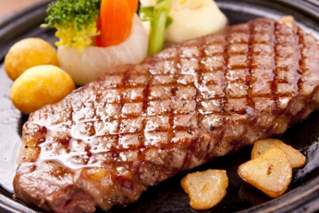

豚肉ともやしの炒め物
 15分
15分 約100円
| 材料：1人前 | |
|---|---|
| もやしゃああああああ | 1袋 |
| 豚肉こま切れ | １００g |
| 塩こしょう | 少々 |
| 醤油 | 小さじ２ |
1
もやしは袋の中に水を入れて軽く洗います。
豚肉は、更に1cm位の幅に切ります。
豚肉は、更に1cm位の幅に切ります。
2
フライパンに油をしいて豚肉を炒めます。
塩コショウで味付けをします。
塩コショウで味付けをします。
3
豚肉に火が通ったら、もやしを加えてお好みの固さまで炒めます。最後に醤油をフライパンにたらし、さっとあえたら出来上がり。
つくった！